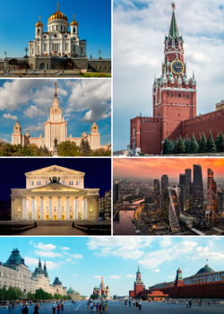

Moskova on Venäjän federaation pääkaupunki ja Venäjän suurin kaupunki noin 13,2 miljoonalla asukkaallaan. Moskova on Euroopan suurin kaupunki, koska Istanbul ei sijaitse kokonaan Euroopassa. Moskova on myös Venäjän tärkein teollisuuskaupunki ja liikenteen solmukohta. Tsaarinvallan aikaan Venäjän pääkaupunkina toimi Pietari, mutta Moskovasta tuli Neuvostoliiton pääkaupunki ja on pysynyt pääkaupunkina Neuvostoliiton romahduksen jälkeen. Moskovassa sijaitsee Kreml, jossa sijaitsevat Venäjän keskeiset hallintoelimet. Kaupunki kasvaa voimakkaasti, sitä palvelee viisi lentokenttää ja Moskovasta lähtevät rautatieyhteydet joka suuntaan. Moskova on saanut nimensä suomalais-ugrilaisesta Mustajoki-nimestä jolla viitattiin kaupungin läpi virtaavaan jokeen.
